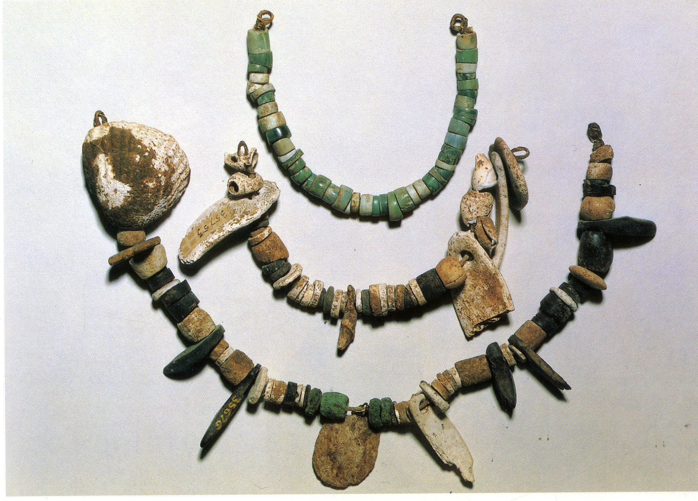
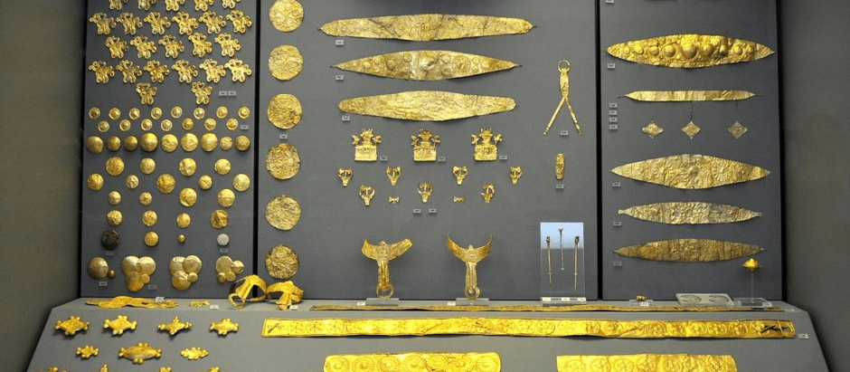
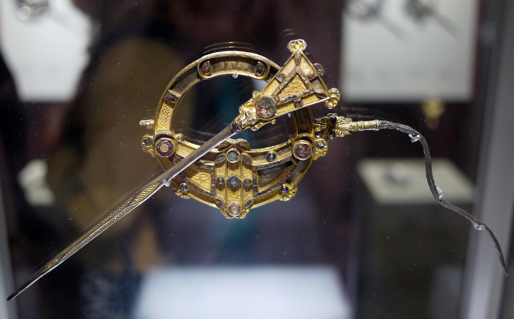
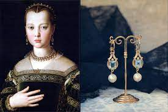

Introducción
La historia de la joyería se remonta a tiempos prehistóricos, cuando los humanos primitivos comenzaron a adornarse con objetos naturales como conchas, huesos y piedras. Con el tiempo, la joyería evolucionó, reflejando los valores culturales y sociales de cada época.

La Joyería de la Prehistoria
Los primeros indicios de joyería se remontan al Paleolítico, hace más de 40,000 años. Los humanos primitivos utilizaban conchas marinas, dientes de animales y huesos para crear collares y brazaletes. Estas primeras piezas de joyería no solo servían como adornos, sino que también tenían un significado simbólico y religioso, relacionado con la protección y el estatus social.

La Joyería en la Antigüedad
Las civilizaciones antiguas, como Egipto, Mesopotamia y Grecia, también hicieron importantes contribuciones al desarrollo de la joyería. En el antiguo Egipto, la joyería era un símbolo de estatus y poder, y se utilizaba tanto en la vida cotidiana como enlos rituales religiosos.

La Joyería en la Edad Media
La Edad Media fue una época de gran influencia religiosa en la joyería. Durante este período, las joyas se utilizaron como símbolos de devoción religiosa y estatus social. Las cruces, los relicarios y los anillos eran comunes entre la nobleza y la iglesia.

La Joyería en el Renacimiento
El Renacimiento marcó un renacimiento del interés por las artes y la cultura, incluida la joyería. Durante este período, la joyería se volvió más elaborada y decorativa, con el uso de gemas preciosas y técnicas de engaste más sofisticadas.

La Joyería en la Actualidad
En la actualidad, la joyería ha experimentado una revolución gracias a las nuevas tecnologías y materiales. La impresión 3D y el diseño asistido por ordenador (CAD) han permitido a los joyeros crear piezas más complejas y personalizadas que nunca antes.
La colección "Jardin Mystérieux" de Van Cleef & Arpels: Esta colección de joyas es una expresión de la creatividad y la habilidad artesanal de la famosa casa de joyería francesa. Inspirada en la naturaleza y los jardines mágicos, la colección presenta piezas únicas y delicadas que combinan gemas preciosas con intrincados detalles en oro y platino.